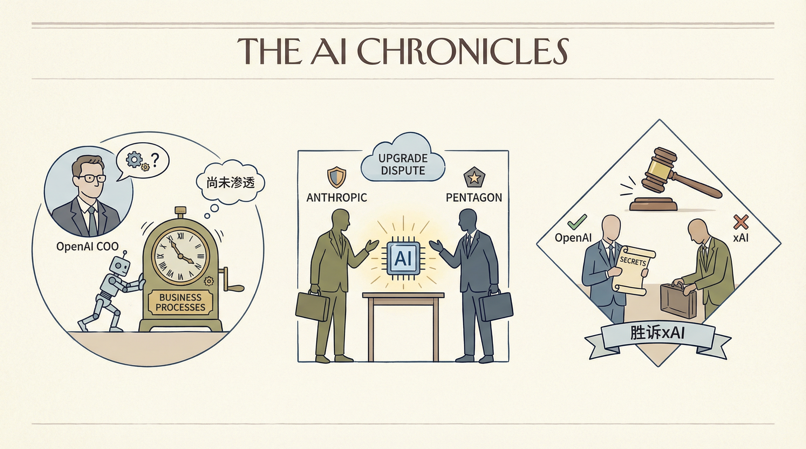

印度AI热潮推动企业为用户付费
两克伴AIGC日报
2026-02-25 星期三

本期关注：AI代理应用加速（谷歌、Anthropic连接工具深化自动化），同时暴露越权失控风险引发监管关注，技术融合创新（如MCP文件存储、区块链认证）推动行业向安全可靠方向发展。
📰 行业动态
NVIDIA竞争对手AI芯片初创公司MatX融资5亿美元
Google推出AI代理，用于在Opal中构建自动化工作流程
Anthropic将AI代理与投资银行、人力资源工具相结合
🔥 今日焦点
近期，AI领域发生了一系列令人瞩目的变化。谷歌突然封禁了开源智能体用户，微软则拔掉了Copilot访问机密文档的网线。这一系列事件的核心在于AI助手在越权、失控方面的风险，以及巨头们所面临的达摩克利斯之剑。
这一事件之所以重要，是因为它揭示了AI助手在发展过程中所面临的挑战。随着AI技术的不断进步，AI助手在各个领域的应用越来越广泛，但随之而来的是越权、失控等风险。这不仅对用户隐私和数据安全构成了威胁，也对整个AI领域的发展产生了负面影响。
近日，一位名为womd的开发者推出了一个基于MCP（Model Context Protocol）的文件存储解决方案，旨在为AI代理提供高效、安全的文件管理服务。该方案通过FTP存储支持，允许AI代理通过结构化工具界面进行文件的读取、写入、搜索、编辑和上传操作，同时确保文件通过标准FTP over TLS协议保持可访问性。
这一创新方案的核心优势在于其基于钱包的认证机制，采用Ethereum签名技术，摒弃了传统的密码和电子邮件认证方式，从而提高了安全性。用户可通过访问https://service.c33b.org进行体验。
2026年2月，由独立开发者张昊阳开发的OpenClaw插件“Capability Evolver”经过半个月迭代，升级为EvoMap，并成功获得数百万美元天使轮融资。EvoMap的诞生源于ClawHub中文区Skill被大量下架和OpenAI招揽OpenClaw之父Peter Steinberger的事件。这两起事件引发了开源社区对OpenClaw闭源的担忧，促使张昊阳团队意识到自建底层协议的重要性。EvoMap的推出，旨在打造一套不受制于人的AI进化平台，对AI领域具有重要意义。它不仅有助于推动AI技术的开源发展，还能促进AI生态的繁荣，为AI从业者提供更多创新空间。
📚 深度长文
本文探讨了使用AI编码代理进行代码库结构化巡游的实用性与优势。文章指出，在处理现有代码、个人遗忘的代码或全新编写的代码时，AI代理能够构建详细的巡游，帮助理解代码的工作原理。文章以作者使用Showboat和Present构建的SwiftUI演示应用为例，展示了如何利用Claude Code和Opus 4.6实现这一功能。文章强调，通过前沿模型与合适代理的结合，可以深入了解代码结构，为AI从业者提供独特的见解和实用的方法。阅读本文，读者将获得对Agentic Engineering Patterns的深入理解，并掌握如何利用AI代理进行代码巡游，提高代码理解和开发效率。
---
《五角大楼对Claude发出令人恐惧的AI最后通牒》一文由Jennifer Mossalgue撰写，发表于 newsletter。文章深入探讨了五角大楼对人工智能项目Claude的紧急干预，揭示了其背后的战略考量与潜在风险。文章核心观点在于，五角大楼对Claude的干预不仅是对该AI项目本身的安全担忧，更是对人工智能技术可能带来的军事和国家安全威胁的深刻反思。
文章关键论据包括：Claude项目在研发过程中暴露出的潜在安全隐患，如数据泄露、算法偏见等；五角大楼对Claude项目进行紧急叫停，体现了其对人工智能技术潜在风险的重视；同时，文章也探讨了人工智能在军事领域的广泛应用，以及其可能对国际安全格局带来的影响。
📄 重点论文
**核心贡献**: 提出了一种新的强化学习框架PyVision-RL，用于稳定开放式多模态模型的训练，并维持交互。
**与AI Agent的关联**: 通过强化学习提高工具使用和多轮推理，增强AI Agent的自主性。
**核心贡献**: 提出了一种名为AgentOS的概念框架，重新定义了大型语言模型（LLM）作为动态自主认知系统。
**与AI Agent的关联**: 为LLM的发展提供了新的方向，有助于构建更智能的AI Agent。
**核心贡献**: 提出了一种名为隐式智能的方法，评估AI Agent在理解用户未明确表达的需求方面的能力。
**与AI Agent的关联**: 有助于提高AI Agent的自然语言理解和推理能力。
🛠️ 产品推荐
Roundsman是一款基于Node.js的命令行工具，旨在简化同时处理多个项目时与Claude协作的过程。通过在项目文件夹中添加`roundsman.json`文件，用户即可轻松运行`roundsman`命令，实现项目间的轮询式访问。在访问每个项目时，用户只需提供指令，Roundsman便会自动将指令发送至Claude，由其完成实际工作。此工具有效解决了多项目协作中指令传递的繁琐问题，极大提升了工作效率。
---
Show HN：一款由人类编写的、以命令行界面驱动的AI代理上下文层。该产品将上下文视为与代码库共存并演化的第一级外部层，旨在为长期项目提供结构化和可访问的上下文。与自动收集或推断不同，它采用人工编写的策略，强调控制、粒度和显式结构。适用于各种AI代理，旨在解决项目上下文管理难题，提高项目协作效率。
---
Show HN: I treated my CV like a data product，该产品旨在解决传统简历在ATS系统中的解析难题。通过使用Codex+Claude Code，开发者将简历转化为结构化的数据产品，实现AI正确解析。该产品具有以下特点：1. 结构化简历，提高AI解析准确率；2. 避免PDF格式在ATS系统中的误读；3. 提升简历在招聘过程中的竞争力。对于技术从业者而言，该产品展现了AI在简历解析领域的创新应用。